Engineering Portfolio
Projects
Type 1 — Design Iterations | NASA Capstone Project | Team 14 — Aquila
Lunar Dust-Tolerant Electrical Connector Protective Enclosure
A mechanically self-protective enclosure concept developed to reduce lunar regolith intrusion into EVA-rated electrical connectors during idle, mating, and unmating operations.
Note: This project section presents a high-level, non-proprietary overview focused on engineering process, design reasoning, and validation outcomes.
The Problem
Dust intrusion in critical EVA connector systems
Lunar regolith is fine, abrasive, and electrostatically adhesive. Existing connector protection methods can leave sensitive electrical contact surfaces exposed during mating and unmating, creating risk of mechanical wear, contamination, jamming, or connection failure.
My Contribution
Design, iteration, and prototype development
I contributed heavily to CAD development, mechanism design, sealing logic, manufacturability, prototype assembly, and iteration review. My focus was helping transform early concepts into a functional design direction that could be tested, refined, and validated.
Key Constraints
Engineering requirements that shaped the solution
- Near IP6X-level dust protection
- One-handed linear actuation compatible with EVA gloves
- No required external twisting during operation
- Durability across repeated mating cycles
- Thermal and structural stability under lunar-like constraints
- Manufacturability with available prototype methods
Design Evolution
From early mechanism exploration to validated proof-of-concept
The design process moved through multiple mechanical directions, prototype reviews, and testing-driven refinements. This section highlights the major design phases without exposing proprietary internal details.
Key Changes
- Explored multiple ways to isolate the connector from the lunar environment.
- Identified complexity and jamming risk in early mechanism concepts.
- Selected iris-style sealing as the primary direction for continuous dust protection.
Phase 1
Early Mechanism Exploration
Objective
This phase focused on understanding the problem space: how to protect sensitive connector surfaces from lunar regolith while keeping the system usable during mating and unmating.
Design Direction
Multiple mechanism directions were considered, including more complex actuation concepts. The design moved toward an iris-door approach because it offered continuous protection while keeping the connector interface covered until engagement.
Validation
Testing the design against real engineering constraints
The final prototype was evaluated through simulated regolith exposure, repeated mating cycles, actuation checks, and simulation-supported validation to determine whether the concept could maintain dust protection while remaining operable.
Testing Overview
Prototype validation under simulated lunar dust conditions
Validation focused on checking whether the enclosure could protect the connector interface during idle, mating, and unmating operations while maintaining smooth one-handed actuation.
This section highlights the testing logic without exposing full internal design details, keeping the focus on engineering process, proof-of-concept validation, and performance outcomes.
Dust Exclusion
Demonstrated no visible particulate intrusion at the connector interface during simulated regolith exposure.
One-Handed Actuation
The cam-driven mechanism supported linear actuation without requiring external twisting.
Durability
Completed repeated mating and unmating cycles without jamming or cleaning during validation.
Structural Response
Simulation and testing supported the design under expected lateral loading conditions.
What Made It Difficult
The project required turning complex ideas into a reliable mechanical system. The hardest part was coordinating sealing, actuation, manufacturability, and connector engagement into one synchronized design.
Failures & Dead Ends
- Early mechanism concepts introduced unnecessary complexity and potential dust jamming risk.
- Manufacturing limitations affected achievable tolerances and smoothness of actuation.
- Some prototype materials were selected for accessibility rather than final aerospace readiness.
Final Outcome
The final result was a validated proof-of-concept showing that a mechanically self-protective enclosure can reduce dust exposure while supporting one-handed linear operation and repeatable connector engagement.
Future Direction
The next step would be transitioning the design toward a space-rated aluminum or titanium prototype, tighter manufacturing tolerances, extended regolith testing, thermal cycling, and vacuum testing.
Type 2 — Teaching & Systems | University of Houston
Engineering Practicum Course Development
A hands-on CAD, manufacturing, and certification training system designed to help engineering students build practical skills in SolidWorks, 3D printing, CNC machining, laser cutting, tolerances, assemblies, and engineering drawings.
200+
Students supported through hands-on engineering instruction
50+
CAD models created for lectures, assignments, and technical practice
100+
Students earning CSWA credentials through structured preparation
<30% → 80%+
Certification rate improvement through targeted training and support
The Challenge
Turning early engineering students into confident designers
Many students begin engineering coursework without strong exposure to CAD, fabrication tools, technical drawings, or manufacturing constraints. The practicum needed a structured way to introduce these skills through practical, real-world-driven learning.
System Built
A repeatable learning pipeline
The course structure connected lectures, demonstrations, CAD models, assignments, quizzes, lab activities, feedback, and skill validation into one technical learning system.
Course Modules
Technical topics developed into teachable engineering workflows

SolidWorks
Part modeling, assemblies, drawings, design intent, and CSWA preparation workflows.

3D Printing
Print orientation, support strategy, material considerations, and design limitations.
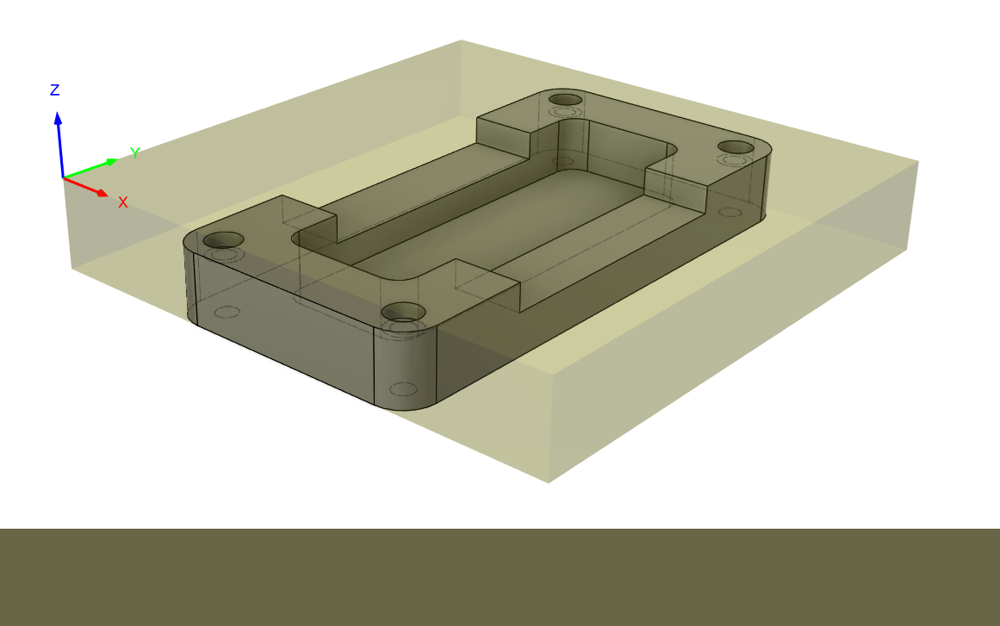
CNC Machining
Toolpaths, setup strategy, safety, workholding, and manufacturing-aware design.

Laser Cutting
2D profiles, kerf, material setup, tolerances, and fabrication constraints.

Tolerances
Fit, variation, manufacturing limits, and technical communication through drawings.

Assemblies & Drawings
Mates, exploded views, BOMs, drawing views, and engineering documentation.
Teaching in Action
Connecting instruction with real fabrication workflows
Videos and lab demonstrations can show students interacting with manufacturing tools, CAD workflows, and technical design exercises. This section include tutorial clips, CNC demonstrations and short walkthroughs from class material.
SolidWorks Tutorial
Guided walkthrough of CAD modeling and design intent.
Assembly Workflow
Demonstration of mates, component positioning, and assembly logic.
CNC / Fabrication Demo
Short demonstration connecting CAD workflows to fabrication steps.
Engineering Drawing Practice
Example of technical communication through drawings and dimensions.
CSWA Training System
A dedicated part of the practicum supported SolidWorks certification readiness through practice models, guided review, structured preparation, and eligibility workflows.
What I Learned
- How to break complex CAD and manufacturing workflows into teachable steps.
- How to design assignments that connect engineering theory with practical constraints.
- How to communicate technical concepts to students with different experience levels.
- How to manage course material, student support, and technical outcomes at scale.
Type 3 — Research & Testing
Unmanned Aerosol System Research
UAV-based atmospheric data collection and sensor validation using a drone-mounted payload to measure temperature, relative humidity, pressure, and particulate matter across vertical atmospheric profiles.
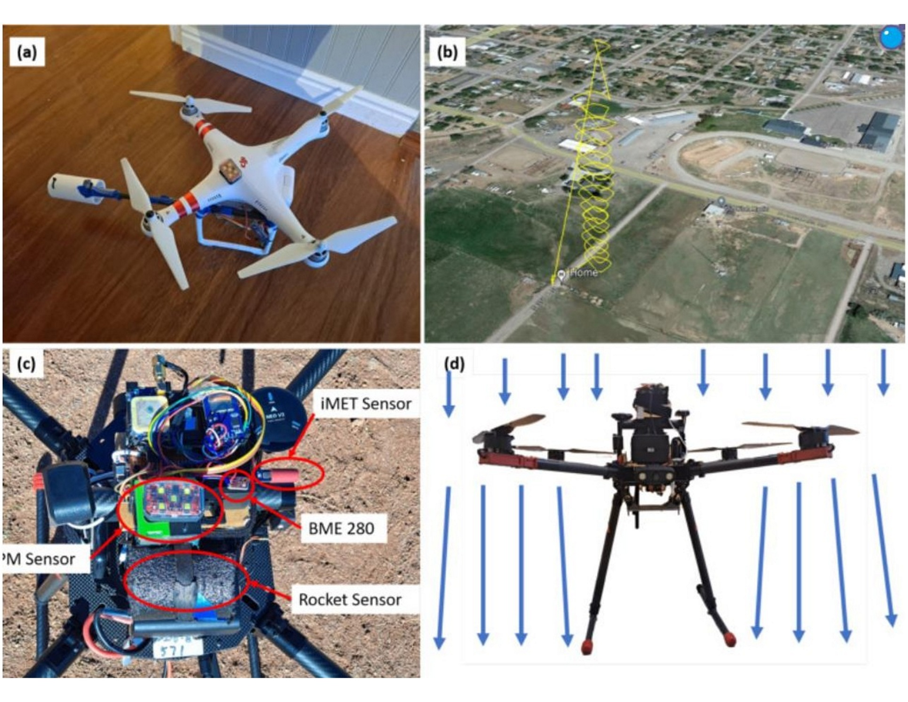
Research Objective
Measuring the lower atmosphere with a drone-mounted sensor system
This research project explored the use of an unmanned aerial system to collect vertical atmospheric profiles in the lower atmosphere. The platform integrated multiple sensors to measure temperature, relative humidity, pressure, and particulate matter while comparing low-cost Arduino-based sensors against a meteorology-grade iMET reference sensor.
My Contribution
Sensor integration, data collection, and analysis support
As a Research Assistant, I supported sensor integration, hardware setup, flight data collection, and analysis of temperature, humidity, pressure, and particulate matter data. I also helped process raw flight data into Excel graphs and contributed to research presentation material.
System Architecture
Drone platform, sensors, and data logging system
The UAS payload was designed to compare sensor performance during vertical atmospheric profiling, balancing sensor exposure, weight, vibration, and reliable data collection.
Arris M900 Quadcopter
Drone platform used for vertical profiling flights and sensor payload testing.
iMET XQ2 UAV Sensor
Meteorology-grade reference sensor for temperature, relative humidity, pressure, and GPS/geolocation.
Bosch BME280
Low-cost sensor used to measure temperature, relative humidity, and pressure for comparison.
Sensirion SPS30
Particulate matter sensor used to measure aerosol and particle concentration distributions.
Arduino Mega 2560
Arduino-based platform used for sensor reading, integration, and data logging support.
microSD + GPS
Data storage and positioning support for timestamped flight measurements and altitude reference.
Flight Testing
Vertical atmospheric profiling up to approximately 140 m AGL
Flight testing was conducted in Richfield, Utah near Snow College facilities, including practice and baseball field locations. The main UAS tests included vertical ascent and descent profiles from approximately 10 m to 140 m AGL.
- 5 primary UAS flight tests
- Testing dates: October 13–14, 2023
- Manual takeoff followed by vertical ascent and descent
- Flights performed under 14 CFR Part 107 rules and regulations
- Presented research findings at an environmental conference in Utah
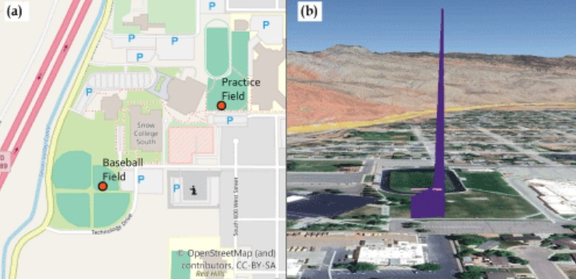
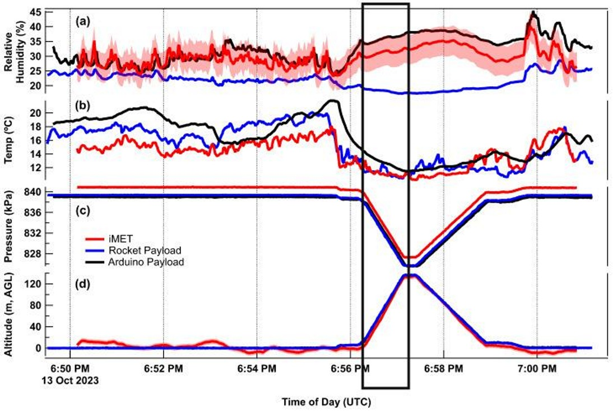
Results
Comparing low-cost sensing with a meteorology-grade reference sensor
The iMET sensor provided faster and more reliable meteorology-grade response, while the BME280 offered useful low-cost measurements but showed noticeable temperature lag during flight.
Pressure + Altitude
Pressure data supported altitude estimation and showed lower noise than GPS-derived altitude.
Temperature Response
The BME280 temperature response lagged compared with the iMET reference sensor.
Humidity Profiles
Vertical humidity profiles were collected and analyzed across altitude intervals.
Particulate Matter
The SPS30 captured aerosol and particulate distribution during flight testing.
Engineering Trade-Offs
Balancing measurement quality with real flight constraints
- Accuracy of the iMET sensor versus cost and weight of lower-cost sensors.
- Sensor exposure for airflow versus mechanical protection from damage and vibration.
- Added payload weight versus reduced flight time and stability.
- Sensor placement and center of mass effects on reliable flight performance.
- Data reliability challenges caused by airflow disturbance, vibration, and sensor response time.
Research Poster Preview
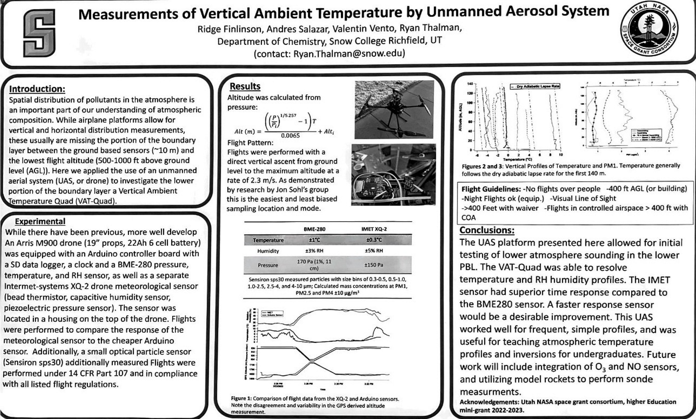
What Made It Difficult
The hardest part was collecting reliable sensor measurements during flight. Drone motion, vibration, airflow, sensor placement, and response time all affected the quality of the data.
Lessons Learned
- Low-cost sensors can be useful, but they require validation against better reference instruments.
- Sensor placement matters because airflow and turbulence can affect measurements.
- Payload integration must consider wiring, protection, center of mass, and flight stability.
- Experimental research requires repeated testing, iteration, and careful interpretation of data.
Type 4 — Simulation & Analysis
PCM Heat Sink Thermal Simulation
Transient thermal analysis of a paraffin-filled aluminum heat sink designed to compare how internal fin geometry affects heat spreading, temperature distribution, and thermal response under a simplified conduction-only model.
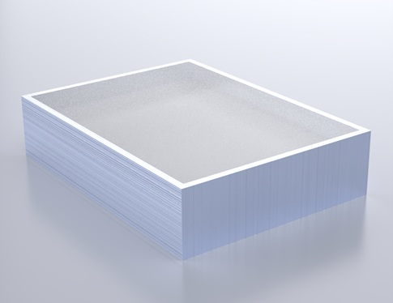
Engineering Question
Do longer internal fins improve PCM heating, or does added thermal mass offset the benefit?
Paraffin wax can store thermal energy, but its low thermal conductivity slows heat diffusion. Aluminum fins can provide additional conduction paths, but they also add mass that must be heated. This project investigates that trade-off by comparing three controlled geometries under identical boundary conditions.
Model Scope
A conduction-only baseline, not a complete PCM melting model
This simulation should be interpreted as a conduction-only baseline, not a complete PCM melting model. The model tracks temperature evolution and heat spreading, but does not explicitly include latent heat, natural convection, or enthalpy-based phase change.
Geometry & Cases
Three configurations used to isolate the effect of fin height
The outer enclosure geometry was kept consistent while the internal fin configuration changed. This allowed the comparison to focus on the effect of fin height on transient thermal behavior.
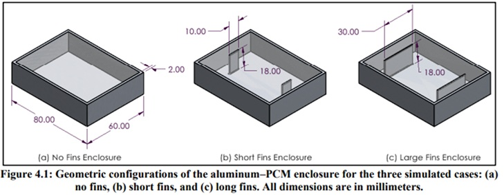
No Fins
Plain rectangular aluminum enclosure filled with paraffin PCM.
Short Fins
Two internal aluminum fins with 10 mm height to improve heat spreading.
Long Fins
Two internal aluminum fins with 30 mm height to extend conduction deeper into the PCM.
Simulation Setup
SolidWorks geometry imported into ANSYS Transient Thermal
The models were created in SolidWorks and imported into ANSYS Workbench as STEP files. Each case used the same thermal loading and boundary conditions to ensure a fair comparison between fin geometries.
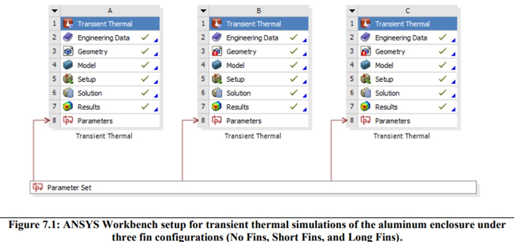
Initial Condition
Entire system initialized at 25°C, below the paraffin melting range.
Thermal Load
One external aluminum wall held at 80°C throughout the transient simulation.
Boundary Conditions
All other external surfaces treated as adiabatic to isolate one-directional heating.
Simulation Time
Total simulated time of 2000 seconds with transient temperature and heat flux extraction.
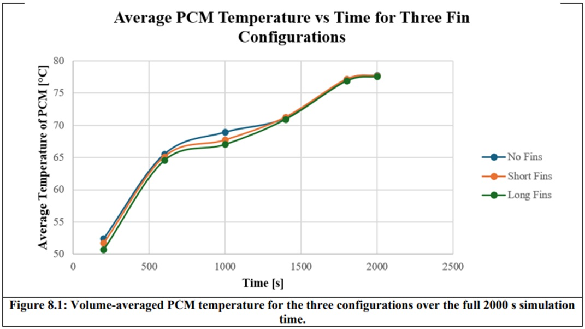
Results Comparison
Fins improved local heat spreading, but did not clearly improve bulk PCM heating
The no-fin case heated the PCM center fastest in the early transient region, while the finned configurations showed improved local conduction but added thermal inertia. By the end of the simulation, all three configurations approached similar average PCM temperatures.
No Fins
PCM center reached 52°C at approximately 198.9 s.
Short Fins
PCM center reached 52°C at approximately 205.7 s.
Long Fins
PCM center reached 52°C at approximately 234.7 s.
Key Trend
All cases converged toward similar average PCM temperatures near the end of the run.
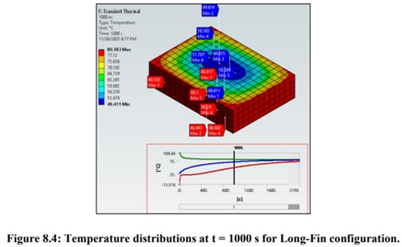
Engineering Trade-Off
Heat spreading versus thermal inertia
Fins improve local conduction paths and spread heat deeper into the enclosure.
Fins also add aluminum mass, increasing thermal inertia during early heating.
Under conduction-only assumptions, longer fins did not automatically improve bulk PCM heating.
Model Reflection
The biggest limitation of this model is that it does not explicitly include latent heat. Because of that, the PCM behaves like a solid material undergoing sensible heating rather than a true phase-change material absorbing energy during melting.
Future Improvement
- Implement an apparent heat capacity or enthalpy-based phase change model.
- Capture the melting range and expected thermal plateau behavior.
- Include natural convection in the liquid PCM phase for more realistic melting behavior.
- Explore additional fin geometries beyond height, including thickness, spacing, and topology.
Final Takeaway
This project provided a controlled simulation framework for comparing fin geometries and revealed an important thermal design insight: increasing conduction pathways is not always beneficial if the added material mass increases early-stage thermal inertia.
Type 5 — Field Engineering
Field Engineering & Fiber Installation Coordination
Field project supervision and underground fiber installation coordination through construction plan reading, crew communication, NC811 utility tickets, ROW review, material tracking, equipment planning, and real-time field problem solving.
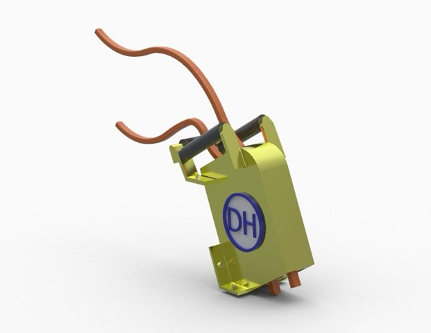
Company Overview
Underground fiber installation and infrastructure support
DH Contractors LLC is an underground utility installation company focused on professional, accountable, and clean infrastructure work. The company supports fiber and conduit installation using methods such as directional drilling, vibratory plowing, trenching, and site restoration.
My Role
Connecting plans, crews, equipment, and field conditions
My work involved supporting field execution by reading construction plans, identifying pedestal, handhole, splice, and route locations, coordinating with crews, reviewing ROW and permit notes, handling utility locate workflows, tracking progress, and documenting field conditions.
Execution Workflow
From construction plans to field installation
The work required translating plan information into practical site execution while accounting for utilities, equipment access, material availability, ground conditions, and client specifications.
Plan Interpretation
Reviewed construction drawings, route maps, stationing, pedestal locations, handholes, splice points, slack loops, and field layout requirements.
Utility Locating / NC811
Supported locate ticket workflows to reduce conflict with existing underground utilities and improve safety before installation.
Installation Methods
Worked around HDD, vibratory plowing, trenching, missile boring, conduit placement, and restoration activities.
Crew Coordination
Helped coordinate crews, equipment, daily work planning, jobsite communication, materials, reels, trailers, and installation progress.
Field Problem Solving
Responded to plan-field mismatches, locate delays, underground conflicts, weather, ground conditions, and equipment limitations.
Documentation
Took jobsite photos, tracked progress, reviewed field notes, and documented installation conditions for communication with project leadership.
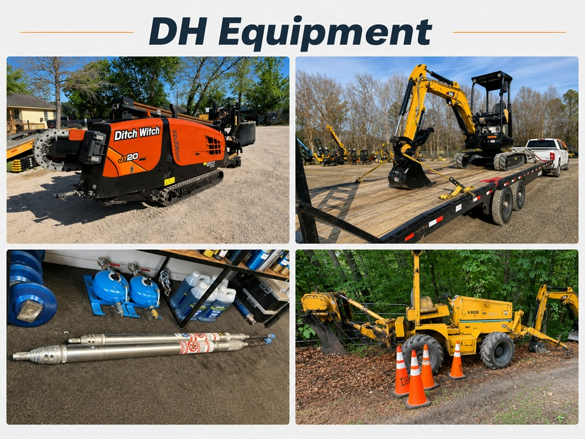
Equipment & Methods
Working around real underground installation equipment
Field work required understanding the capabilities and limitations of equipment used for underground fiber installation, including HDD drills, vibratory plows, mini excavators, compressors, missile boring tools, conduit reels, trailers, locators, and hand tools.
- Directional drilling for trenchless installation
- Vibratory plowing for efficient conduit placement
- Missile boring for short underground crossings
- Mini excavators and hand tools for access pits and restoration
- Locators and NC811 markings for underground utility awareness
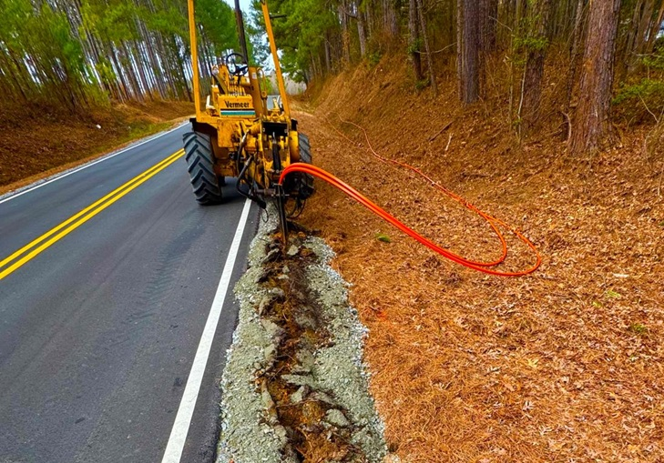
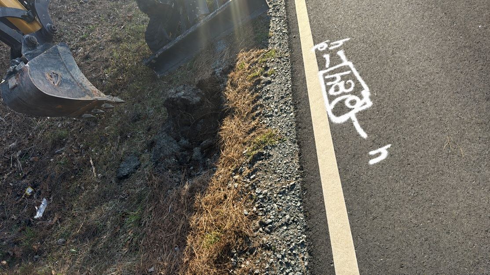
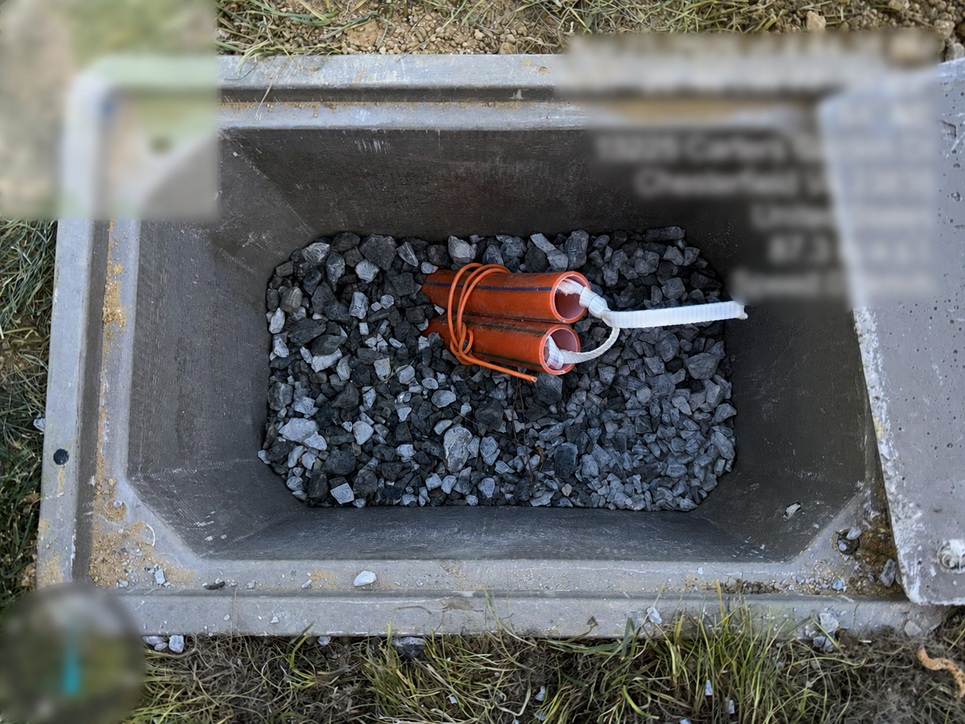
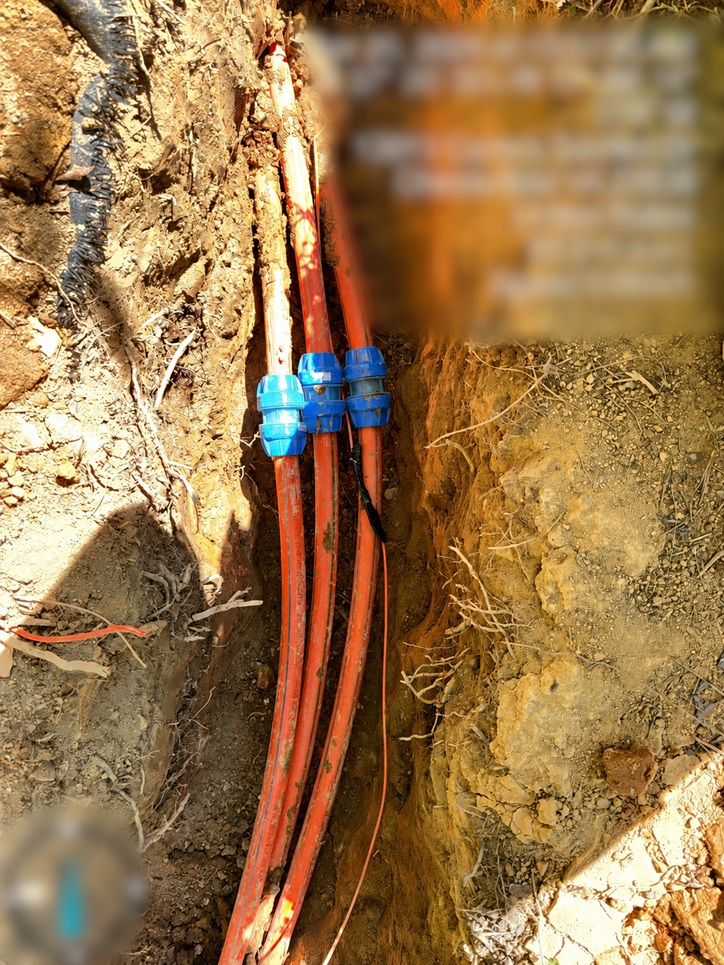
Field Challenges
When plans meet real site conditions
The hardest part of the work was handling the difference between construction drawings and real field conditions. Utility conflicts, locate delays, weather, terrain, equipment limitations, and changing jobsite constraints all affected how work could be executed.
Plan vs. Field Conditions
Construction drawings did not always match site conditions, requiring field judgment and communication.
Utility Conflicts
Existing underground utilities required careful locate review and installation planning.
Equipment Limitations
Not every tool or machine was suitable for every soil, crossing, route, or access condition.
Material & Crew Coordination
Progress depended on having the right crew, conduit, reels, equipment, and instructions ready.
Engineering Takeaways
- Learned how construction plans are translated into real underground installation work.
- Improved ability to read technical drawings under practical field conditions.
- Developed stronger understanding of constructability, sequencing, and installation constraints.
- Gained exposure to how equipment capabilities shape feasible installation methods.
- Learned how communication between crews, project managers, and clients affects project execution.
Project Value
This field experience helped me operate between engineering plans and field operations. It strengthened my ability to coordinate work, interpret drawings, understand real-world constructability, and support crews during underground fiber installation projects.